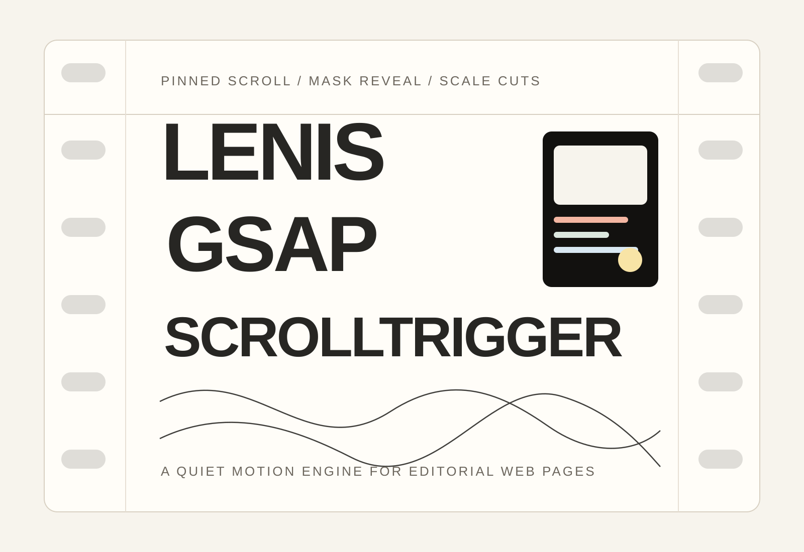
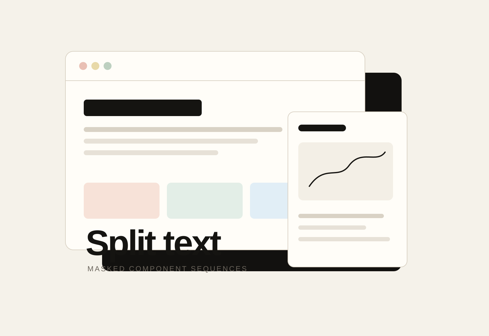
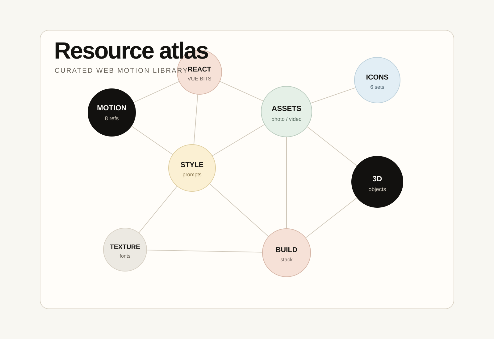
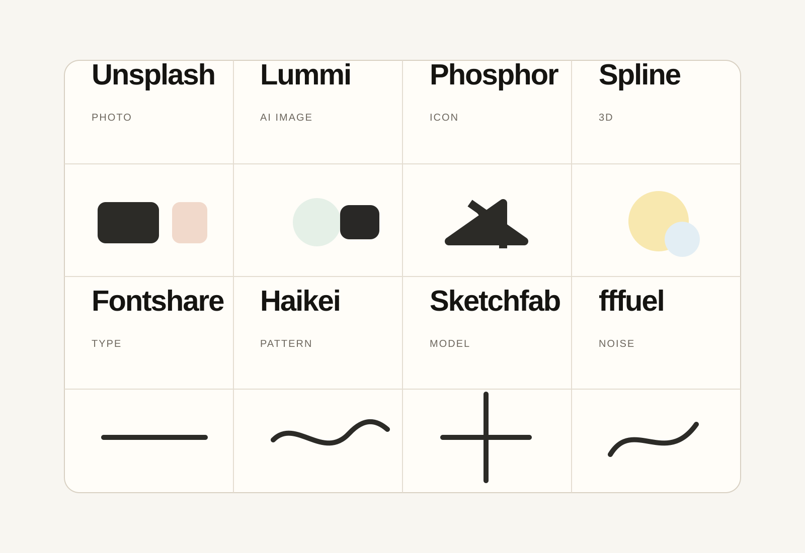

把某一屏暂时钉住，让内容像镜头而不是路过的海报
当一段信息需要被完整理解，或者你要把文字与视觉组合成一个分镜时，pinned scroll 会给用户一个真正停留的时间窗
ADVANCED WEB RESOURCE LIBRARY
从动画引擎、文字切分、视觉素材到 3D 物件，这个页面把你的本地资源库重新编排成一个高留白、中心构图、强切场的官网入口

WHY THIS EXISTS
资源库的价值不在数量，而在组合方式；一个高级网页通常需要先定视觉气质，再选动效系统、素材来源和组件参考
这里把原本分散的 README、推荐组合、安装命令和 resources.json 重新压缩成叙事页面，可以浏览，可以感受，也可以直接点击使用
MEANINGFUL TEXT INTERACTION
不是每个效果都该上；这里把你要的视频感网页里最常见的五个术语拆开，说明它们分别解决什么问题、什么时候该停手
当一段信息需要被完整理解，或者你要把文字与视觉组合成一个分镜时，pinned scroll 会给用户一个真正停留的时间窗
01 / MOTION ENGINE
Lenis 负责手感， 负责建立分镜停顿， 负责让标题进入更有层次， 和 则把切场做得更像镜头推进；这些动作叠加后，页面不再是上下移动，而像一段被滚轮剪辑的短片
查看 GSAP
02 / RESOURCE ATLAS

GSAP、Lenis、SplitType、Three.js、OGL、barba.js、Swiper
8 个入口，决定滚动语言和镜头感把高级动效组件当作节奏参考，再按项目栈重写
3 套参考源，适合拆解成熟区块节奏先选视觉语言、材质和版式，再决定动效重量
写代码前先定气质，能少走很多弯路Unsplash、Pexels、Pixabay、Lummi、Freepik
5 个源头，解决画面质感和真实度Phosphor、Lucide、Tabler、Heroicons、Iconify、React Icons
6 套图标风格，对应不同 UI 语气Spline、Sketchfab、Poly Haven、Vectary、ShapeFest
7 个方向，负责空间感和物件存在感Twemoji、Noto Emoji、OpenMoji、Fluent Emoji、Blobmoji
6 套轻互动风格，适合年轻化和社交感页面unDraw、Storyset、Transparent Textures、Haikei、Fontshare
14 个方向，解决版式气质、背景肌理和字体表达EFFECT TRANSLATION
每个样本对应资源库里的一个实际用途：滚动手感、时间线、文字拆分、3D 深度、组件灵感、轮播展示、图标反馈和素材揭示
鼠标经过时轨迹会被拉成柔和曲线，模拟 smooth scroll 的阻尼感
条带按顺序推进，表达 pinned section 里一段分镜如何被滚动驱动
重要标题 hover 时有小幅字形位移，适合大字编辑排版
不直接上重 WebGL，先用轻量空间样本表达物件和视差关系
用微交互展示组件库的价值：状态、反馈、层级和 hover 物理感
图片、视频和案例不堆满一屏，用横向切换保持节奏
图标只在行动点出现，点击、复制、跳转时给出明确反馈
用字体、纹理和提示词先定方向，再决定动效轻重
Lenis 让滚轮、触控板和章节停顿之间更顺，适合长页面叙事、作品集首页和资源导航
03 / CHOSEN STACK

04 / PRACTICAL PLAYBOOK
这里把资源库里的推荐组合做成了可切换方案；每个方案给出适用目标、核心库、提醒点和起手安装命令，方便你直接开工
把滚动当成时间线处理，重点做章节停顿、标题进场和画面推进；适合你这次要的电影感官网
npm install gsap lenis split-type three
05 / COMMAND SHELF
这部分直接对接你资源包里的《安装命令.md》；右侧固定成终端视觉板，左侧命令随着滚动逐条展开，滚完这一段再进入完整资源库
06 / FULL RESOURCE LIBRARY
不只保留少量推荐链接，也把 resources.json 里的全部分类、用途、官网、GitHub 和 npm 信息做成可切换浏览器；你可以按类别看，也可以直接点出去
8 个条目